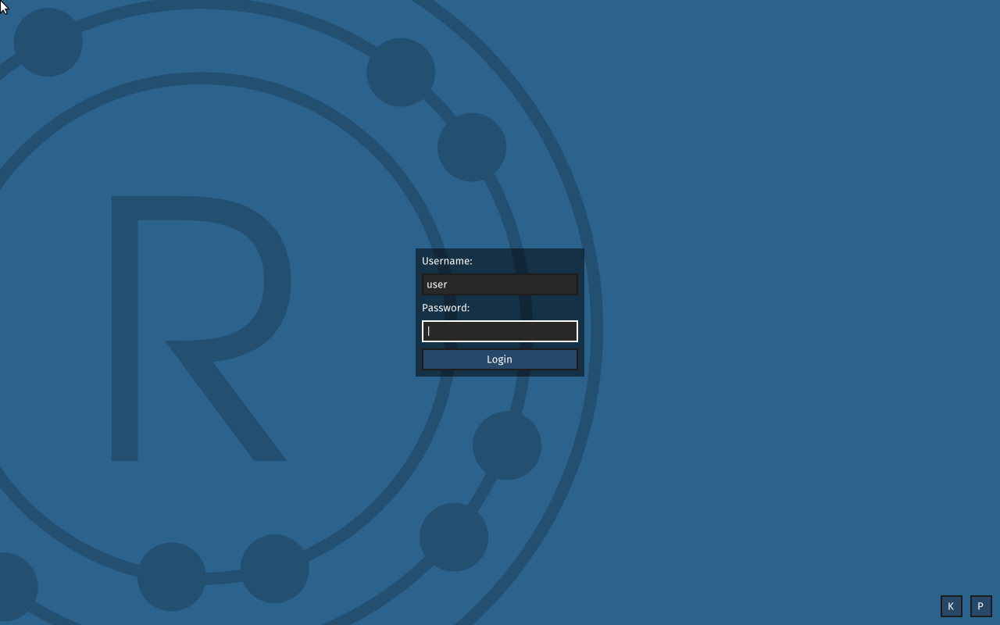

Source-built OS
UEFI bootloader, Redox kernel, initfs, relibc, base daemons, userspace, and Orbital — all Nix derivations.
Alpha · Redox OS · Nix flakes
A complete Redox distribution assembled with Nix: kernel, bootloader, libc, userspace, and the Orbital desktop. One command gets you a running desktop; every component is reproducible from source.
x86_64 Linux host · KVM · ~10 GB · graphical display for the desktop runner

Boot the graphical desktop directly from the flake.
$ nix run github:brittonr/nix-redoxLog in as user with password redox. The first build compiles the OS; later runs reuse the store. Use nix run .#headless without a display.
A 61-second end-to-end run: UEFI boot, Orbital login, and snix system inspection inside the guest.
UEFI bootloader, Redox kernel, initfs, relibc, base daemons, userspace, and Orbital — all Nix derivations.
Composable modules for users, networking, services, hardware, and image assembly. Search the option surface with redox-help.
The self-hosting image ships rustc, cargo, LLVM/LLD, and snix; compile and manage the system from inside Redox.
redox-rebuild tracks host-side builds; snix system rebuild and generations handle live guest changes.
Pinned inputs, per-crate builds, fixed-output sources, and a tiered CI gate from evaluation to VM integration.
VM, declarative configuration, self-hosting, and image workflows are exercised. Bare metal and some networking paths are experimental.